Ejercicio 8
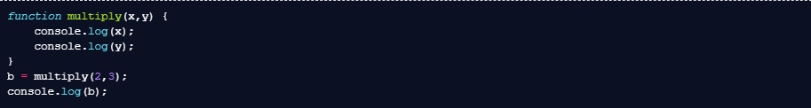Ejercicio 9
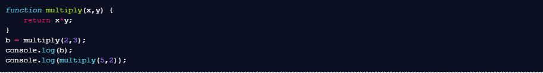Ejercicio 10
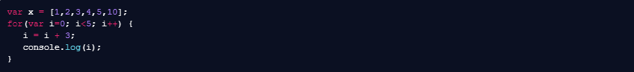Ejercicio 11
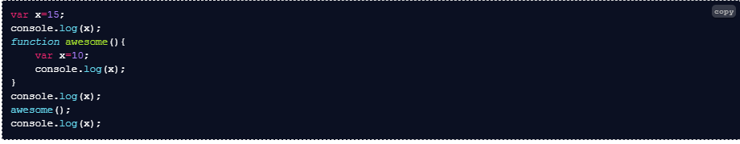Ejercicio 12
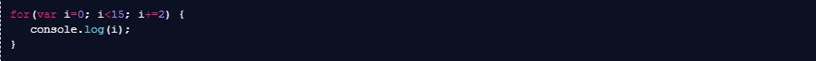Ejercicio 13
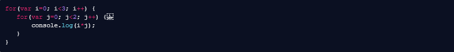Ejercicio 14
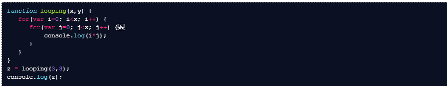Ejercicio 15
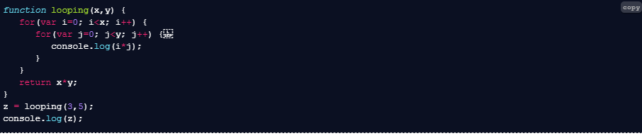Print 1 to x
Por favor, completa los siguientes códigos para que la función imprima (print) todos los enteros (integers) de 1 a x. Si x es negativo, haz que se muestre (print/log) “número negativo” y que la función devuelva falso.
Ejercicio 16
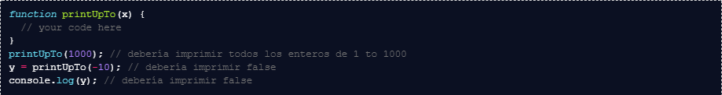PrintSum
Completa el código de más abajo para que la función imprima enteros (integers) de 0 a x y donde cada entero imprima la suma (sum) parcial. Haz que la función entregue la suma final.
Ejercicio 17
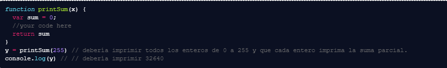PrintSumArray
Completa el código a continuación para que la función entregue la suma de todos los valores en un array dado.
Ejercicio 18
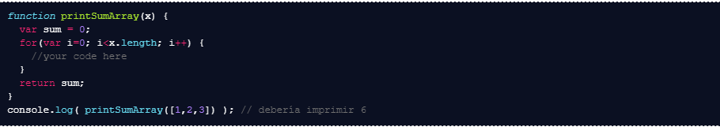Bonus: LargestElement
Crea una función que entregue el elemento más grande (largest element) en un array. Por ejemplo largestElement([1,30,5,7]) debiera dar como resultado 30.